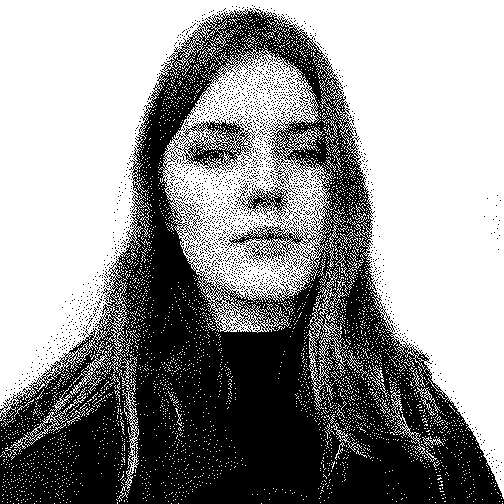

about
I’m a Russian American designer based on Los Angeles. I was born and primarily raised in Moscow, where the maternal side of my family is from, and moved to California, where the other side of my family calls home, in 2014.
I hold a Design | Media Arts degree from UCLA. I was one of the only two interns at Are.na. I was "patient zero" of social justice feminism in the Russian web.
